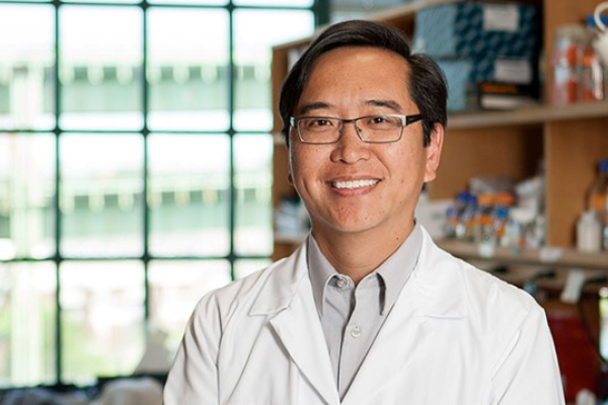

Lee Zou — Ad Hoc Committee Report

Lee Zou, Ph.D.
Instructor of Pharmacology and Cancer Biology
Duke University Medical Center
Formerly:
Professor of Pathology
Harvard Medical School (MGH)
Scientific Co-Director MGH Cancer Center
David MacAlpine, Ph.D.
Michael Kastan, M.D.,Ph.D.
Xiao-Fan Wang, Ph.D.
Gerard Blobe, M.D.,Ph.D.
Executive Summary
Dr. Lee Zou is an internationally recognized leader in the genome integrity and DNA damage response fields. Since opening his independent lab at MGH in 2004, his scientific contributions have been highly influential, with a publication record that exceeds 130 papers in prestigious journals and an h-index of 59. His leadership experience and service record are impressive, as is his track record for mentoring postdoctoral fellows.
However, Dr. Zou's mentoring of Ph.D. students has been limited due to constraints at Harvard, and there is a lack of available teaching evaluations. Despite these challenges, Dr. Zou's strengths, including his research, leadership, and service, make him an exceptional candidate for the rank of Professor with Tenure in the Department of Pharmacology and Cancer Biology.
Research Field
Dr. Zou is a pre-eminent scholar in the field of genome integrity, with a focus on the DNA damage response. This field involves the replication, repair, and segregation of DNA, and is crucial for the maintenance of genome integrity. Dr. Zou's work is focused on understanding how cells signal and respond to DNA damage and stalled DNA replication forks.
Dr. Zou has published over 130 high-impact publications, contributing significant insights such as the identification of single-stranded DNA as the key signal for activating the ATR-dependent DNA damage response and the role of ATR in DSB repair, DNA synthesis, and chromosome segregation.
His research also delves into cancer biology, studying how the ATR-mediated DNA damage response is altered in cancer cells and how these differences can be exploited for therapeutic benefit.
Professional Development
- Graduate Studies: Under the guidance of Dr. Bruce Stillman at Cold Spring Harbor Laboratories, discovered a conserved factor, Cdc45, essential for the initiation of DNA replication (Zou et al., MCB, 1997; Zou and Stillman, Science, 1998).
- Postdoctoral Fellowship: Working in Stephen Elledge's lab at Baylor College of Medicine, he defined the role of single-strand DNA as the molecular trigger for the activation of ATR, a key sensor of DNA damage and replication stress (Zou and Elledge, Science, 2003; Zou et al., PNAS, 2004).
- Faculty: In his independent lab at Massachusetts General Hospital, Dr. Zou made significant strides in understanding the mechanisms regulating ATR signaling and the DNA damage response in human cells, leading to key insights about how ATR activation is modulated (Shiotani and Zou, Mol Cell, 2008; Liu et al., Mol Cell, 2011).
Current Research Interests
- Genome Maintenance: Pioneered in understanding the role of ATR signalling in various aspects of genome maintenance, including chromosome segregation (Kabeche et al., Science, 2018).
- Alternative Lengthening of Telomeres: Made significant advances in elucidating the mechanisms and implications of the Alternative Lengthening of Telomeres (ALT) pathway (Flynn et al., Nature, 2011; Flynn et al., Science, 2014; Zhang et al., Mol Cell, 2021; Yadav et al., Mol Cell, 2022).
- Interplay between Gene Expression, DNA Repair, and Chromosome Organization: Investigating the dynamic interaction between these critical cellular processes, with a recent focus on the role of transcription in D-loop formation during homologous recombination at double-strand breaks (Ouyang et al., Nature, 2021).
Future Directions
- Identifying the types of replication stress associated with different cancer types and exploring the therapeutic potential of targeting ATR and the DNA damage response.
- Focusing on the reliance of a subset of cancers on alternative lengthening of telomeres (ALT), providing a unique therapeutic opportunity for ATR inhibitors.
- Translating fundamental research into promising clinical trials, leading to mechanism-based treatments for cancer patients.
Significance of Research Agenda
- DNA Integrity: A leader in elucidating the biochemical and molecular mechanisms maintaining genomic integrity in human cells, focusing on how cells sense and respond to DNA damage.
- ATR Kinase: Major contributions to understanding the mechanisms of action of the ATR kinase, a master regulator of replication stress responses crucial for various cellular processes under DNA damage and stress (e.g., DNA replication, DNA repair, chromosome segregation, transcription).
- Genomic Instability in Cancer: Insightful investigations into the alteration of these pathways in cancer, the origins of genomic instability in cancer cells, and the exploitation of distinct types of genomic instability in cancer therapy.
- Translational Impact: Some findings have been translated into new drug targets and clinical trials. The lab continues to study these pathways in critical pathological contexts, including cancer, aging, and developmental diseases.
Scholarly Trajectory
- Started independent lab in 2004, rose to Professor of Pathology (tenured) in 2013
- Seminal contributions to genome integrity and replication stress response
- Recent paradigm shifting works on nuclear condensates and ALT pathway regulation
- Translates mechanistic insights into potential cancer therapies
- Impressive grant portfolio ($>7M) includes prestigious R35 from NCI, among others
- Award-winning work, including AAAS Fellow, NCI Outstanding Investigator, Blavatnik Therapeutics Challenge awards
- Recognized as preeminent basic scientist in genome integrity field
- Will continue to make advances, and expected to provide leadership as Department Chair
Scholarly Productivity
- Published 30 research papers as corresponding or co-corresponding author since promotion to Full Professor in 2013
- High-impact publications include:
- 1 in Nature (IF 69.5)
- 3 in Science (IF 47.7)
- 10 in Molecular Cell (IF 19.3)
- 4 in Genes & Development (IF 12.9)
- 2 in Nature Communications (IF 17.7)
- 2 in Cancer Research (IF 12.7)
- Authored invited reviews for prominent journals, including:
- 1 in Cell (IF 41.6)
- 1 in Cancer Cell (IF 31.7)
- 3 in Molecular Cell (IF 19.3)
- 2 in Genes & Development (IF 12.9)
- 1 in Nature Reviews Molecular and Cell Biology (IF 113.9)
- Invited to deliver lectures at international scientific meetings and seminars at universities and research institutions
- Served as keynote speaker and session chair for conferences
Teaching and Mentoring
- 18 years as a faculty member at Harvard Medical School and Massachusetts General Hospital
- Mentored 47 individuals, including post-docs, graduate, master's, and undergraduate students
- Trainees received 36 awards including Forbeck Scholar Award, NCI K99/R00 awards, and more
- 12 former post-docs now hold positions in academia, many others are leaders in pharma/biotech
- Demonstrated commitment to diversity through mentoring in the Harvard/DFCI CURE Program
- Active mentor in broader Harvard Medical School and Massachusetts General Hospital community
- Delivered 28 lectures to fellows and graduate students, tutored in Molecular Biology and Pathology
Service
- Served on 20 faculty search committees at Massachusetts General Hospital, chairing 3
- Directed the MGH Cancer Center Seminar Series since 2007, and served in various administrative roles
- Co-led the Cancer Cell Biology Program at the Harvard University Dana Farber/Harvard Cancer Center since 2018
- Served on the Editorial Boards of Faculty of 1000 /Faculty Opinions, Genomic Instability & Disease, Journal of Biological Chemistry, Molecular and Cellular Biology, Cancer Research, and Molecular Cell
- Acted as a reviewer for more than 90 journals including Cell, Science, Nature, Journal of Clinical Investigation, and Cancer Discovery
- Engaged in grant peer review for NIH, Department of Defense Breast Cancer Research Program, and many international funding agencies
- Participated as a session chair at several conferences, organized/co-organized international conferences
- Served on the Cancer Workforce Diversity Study Section, contributing to the diversity initiative
External Evaluators
| External Evaluator |
Institute |
Brief Quote |
| Junjie Chen, Ph.D. |
MD Anderson Cancer Center |
"Dr. Zou is among the top scientists in the field... Based on his research creativity as well as his overall academic achievement, I support Dr. Zou's appointment without reservation." |
| Karlene Cimprich, Ph.D. |
Stanford University |
"Dr. Zou is a talented, thoughtful and creative scientist... He has begun to truly translate his basic science discovery into the clinic... I fully support his appointment to this position." |
| Daniel Durocher, Ph.D. |
University of Toronto |
"Lee is a world-renowned leader in the field of DNA damage response... His work embodies the best of modern molecular biology/biochemistry... I recommend Dr. Zou's appointment without any reservation." |
| Roger Greenberg, M.D., Ph.D. |
University of Pennsylvania |
"Lee is among the most talented and creative scientists... His work has inspired a considerable following in both academics and the pharmaceutical industry... I recommend his candidacy with the highest enthusiasm." |
| Tanya Paull, Ph.D. |
University of Texas at Austin |
"Dr. Zou is world-class, outstanding researcher and would certainly be a valuable asset to your institution as a tenured faculty member." |
| Helen Piwnica-Worms, Ph.D. |
MD Anderson Cancer Center |
"Dr. Zou has made seminal contributions and is recognized as a leader in the DNA damage field... He is an exceptional scientist excelling in scholarship, mentorship and service." |
| Yosef Shiloh, Ph.D. |
Tel Aviv University |
"Dr. Zou has become one of the major figures in the field and he is now undoubtedly one of its world leaders... He leads one of the most influential and productive labs in basic cancer research." |
Peer Group Summary
| Investigator |
Title & Institute |
# Publications |
h-Index |
| Anja Bielinsky |
Chair of Biochemistry, UVA |
62 |
25 |
| David Cortez |
Chair of Biochemistry, Vanderbilt |
142 |
65 |
| Simon Boulton |
Senior Group leader, Francis Crick Institute |
180 |
71 |
| Daniel Durocher |
Professor, Lunenfeld-Tanenbaum Research Inst. |
165 |
70 |
| Jean Cook |
Chair of Biochemistry, UNC Chapel Hill |
70 |
31 |
| Lee Zou |
Incoming Chair of PCB, Duke |
131 |
59 |
| Roger Greenberg |
Director of Basic Science, Bess Center, University of Penn |
163 |
57 |
| Supriya Prasanth |
Chair of Cell & Developmental Biology, University of Illinois Urbana-Champaign |
60 |
25 |
| Marcus Smolka |
Interim Director of the Weill Institute, Cornell |
121 |
40 |
Several senior scientists were also suggested as peers for Dr. Zou, including Junjie Chen, Chair of Therapeutic Radiation Oncology at M.D. Anderson Cancer Center; Karlene Cimprich, Professor at Stanford University; Alan D’Andrea, Professor at Dana Farber Cancer Institute and Harvard Medical School; Titia de Lange, Professor at Rockefeller University; Steve Jackson, Professor at University of Cambridge, UK; Jiri Lukas, Professor at University of Copenhagen, Denmark; Andre Nussenzweig, Distinguished Investigator at the NIH; David Pellman, Professor at Dana Farber Cancer Institute and Harvard Medical School; John Petrini, Professor at Sloan Kettering Memorial Cancer Institute; Johannes Walter, Professor at Harvard University; and Stephen West, Professor at Francis Crick Institute, UK. However, they were not considered true peers due to having established their independent positions significantly before Dr. Zou.